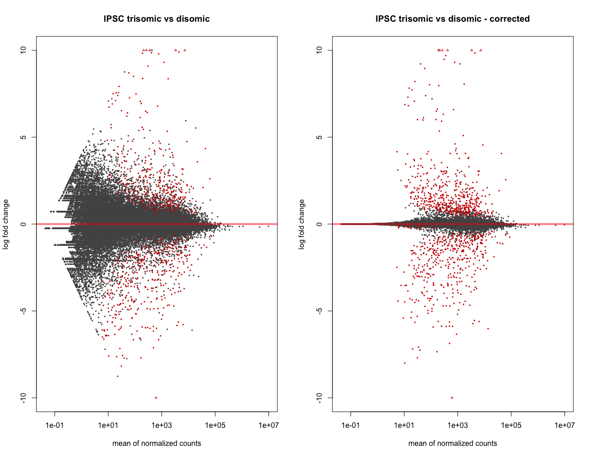
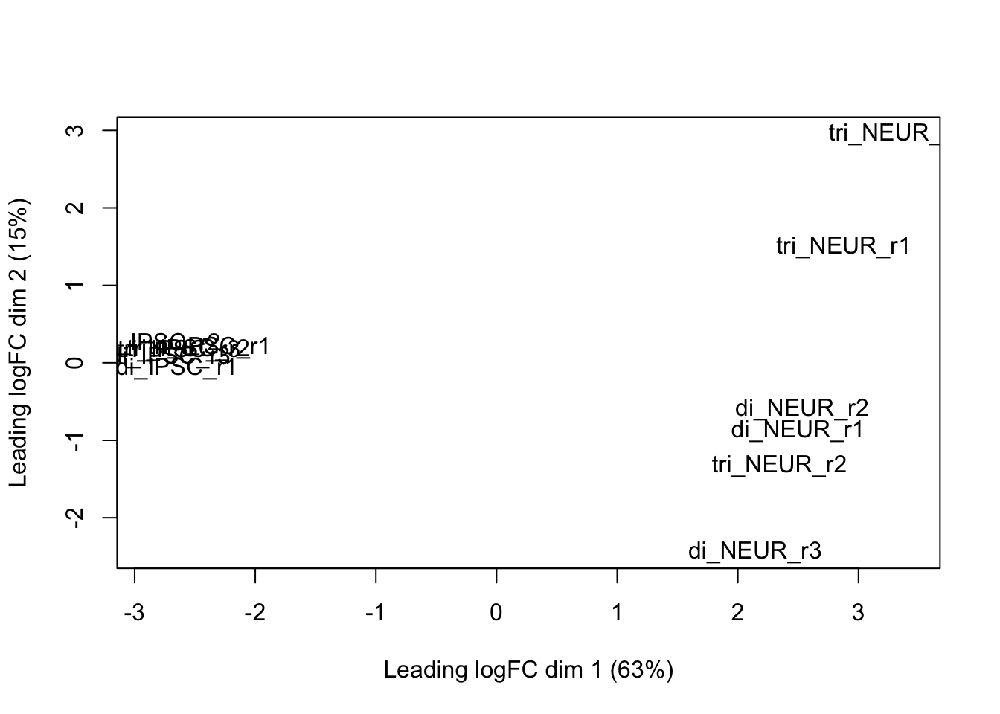
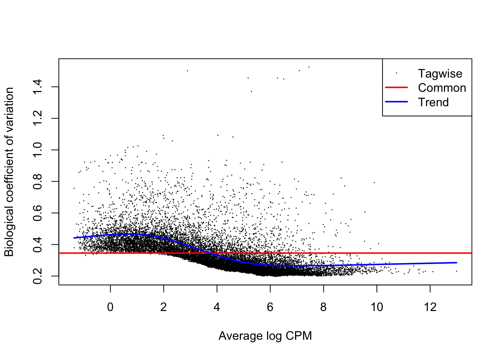
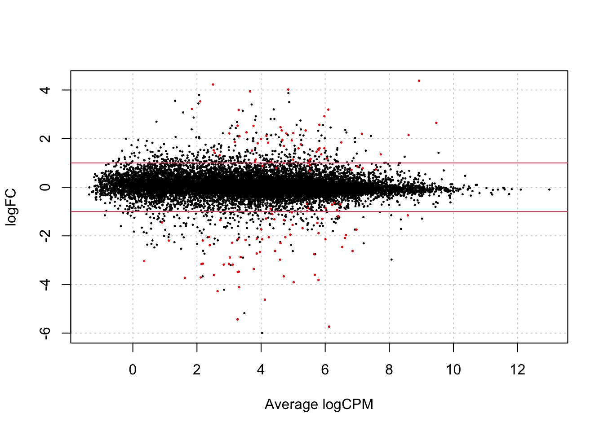

Discovering Differentialy Expressed Genes (DEGs)
The first and most important ‘real’ analysis step we will do is finding genes that show a difference in expression between sample groups; the differentially expressed genes (DEGs). The concept might sound rather simple; calculate the ratios for all genes between samples to determine the fold-change (FC) denoting the factor of change in expression between groups. Then, filter out only those genes that actually show a difference. While this does give a list of genes showing different behaviour across samples, we need to focus on genes that do not only show a difference, but are also statistically significant!
To determine whether or not a gene can be classified as a significant DEG we are going to use - at least - two techniques:
- We will start with manually performing statistical test(s)
- and compare these results from those given by using one or more R (Bioconductor) libraries (mostly
edgeRandDESeq2)
4.1 Pre-processing
Given the results of the exploratory data analysis performed in chapter 3, you might have concluded that there are one or more samples that show (very) deviating expression patterns compared to samples from the same group. As mentioned before, if you have more then enough (> 3) samples in a group, you might opt to remove a sample to reduce the noise as the statistical tests are very sensitive to this. Since we are performing all analysis steps programatically it is also very easy to test for DEGs with and without the sample(s) in question and see if the removal results in lower p-values (= higher significance). If this is the case you can continue on without those sample(s). As always, be sure to properly document this, including the reason why you chose to remove them.
Another step we need to take - and this might be guided by your article - is to filter out (partially) inactive genes. Most datasets available contains a lot of 0-measurements, transcripts where no reads have mapped. In the R-studio Environment tab, click on your dataset (or perform the View(data) command and click on one of the sample columns to order the data ascending. You will now most likely (unless you have bacterial data for instance) see a lot of zero values in all columns. In an experiment with two groups, three replicates each, if three out of those six samples have 0-reads mapped, it is often adviced to remove the gene completely. But this can be very subjective to the experiment, it might be expected (thus important) when comparing different tissues or knockout experiments. Also, genes with a (very) low read count (< 5) can give a very high (artificial) FC value (see the lefthand side of an MA-plot). Comparing two samples where one has a value of 2 and the other 11, this reads as an up-regulated gene by a factor of 5.5 while it might actually just be noise!
-
Assignment: Search through your article for any advice on how to filter out zero values or low count genes. If there is nothing stated on this subject, think of your own tactic (or search the literature/ online!). It is perfectly fine to discuss with your peers.
- describe what you will be doing for this aspect; if you do not filter your data, clearly explain why not (most likely because the article stated a proper reason)
- Perform the filtering on your dataset. For this you will most likely need to use one of the
apply,rowSums,rowMeansfunctions, combined with maybe thewhich,allandanyfunctions. Data transformations/ normalizations are often available from functions too, such as thecpmfunction from theedgeRlibrary. - Manually verify that the rows removed were correctly filtered.
- Properly document how many genes have been filtered out!
4.2 The Fold Change Value
The FC is usually given as the calculated log2 of the case/control ratio. For example, gene A has an average expression of 30 mapped reads in the control group and 88 reads in the experiment group, the ratio case/control is 2.93. Ratio values > 1 indicate increased expression in the experiment in relation to the control and values between 0 and 1 indicate lower expression. The log2 transformed value of the ratio is calculated with log2(2.93) and results in 1.55. If the counts were reversed, the ratio would have been 30/88, which is 0.34. The previously calculated value of 2.93 means a 3-fold up regulation while the 0.34 value means 3-fold down regulation but you can see the range of numbers is very different. Comparing log2 values this would be 1.55 and -1.55 which compares much better.
While it is very easy to calculate the FC for all genes at once, a simple FC value doesn’t mean much, yet! We still need to use the power that lie within the replicates we have for each sample group. Using these replicates, we want to determine if the observed FC is not just biological noise or a sequencing error.
-
Assignment: Create a
histogramof your log2-FC values for all genes. Apply the following steps on your normalized data to do this for at least one comparison (no need to do it for all possible combinations):- average the replicates for each group and add this as a new column to your data set,
- calculate the ratios; simply divide one group (averaged-column) by another, usually
experiment/control, - perform a log2-transformation (now you have the
log2-FCvalues), - plot the data using the
hist(logFC_column, breaks=60)function (change thebreaksargument if needed), - Add two vertical lines at
-1and1(usingabline(v=...)) to indicate some significance (2-fold change).
If a calculated FC shows a large change in expression between groups this means nothing if the variation within a group is very high. For this reason we use some form of statistical test that checks both the variation in each group and the difference between groups of samples. In the simplest form this usually comes down to using a t-test:
“It can be used to determine if two sets of data are significantly different from each other”
It does however depend on your experimental setup when it comes down to deciding the proper statistical test to perform and for that it is best to look at your experiment article to see what the authors used for method. Most often though, the article only mentions the use of one or more R libraries of other software packages for finding DEGs. In this case you can find the appropriate method by determining the possible combinations to test.
The output of finding DEG’s always includes - but is not limited to - a list of p-values; usually one p-value per gene. This value indicates whether that gene is a statistically-significant differentially expressed gene (SDEG) and to find these genes of interest all we need to do is get all genes with a p-value below our threshold (i.e. 0.05). Because we will get at least two p-values per gene (one found using manually statistical testing and one through the use of a library) we can make multiple selections, i.e. compare methods, find genes that have a low p-value in both methods and visualize these results in a venn-diagram (see section visualization).
4.3 Using Manual Methods (t-test & ANOVA)
Performing the statistical tests yourself consists of performing either a t-test or an ANOVA based analysis. Both of these methods have multiple forms and the one to choose fully depends on what question you’d like to ask. Again, refer to your experimental setup and any hints found in the article or formulate your own question and base the decision on that.
Manually performing a t-test or ANOVA on gene expression opposed to using one of the specialized libraries can have advantages since every gene is processed individually, while edgeR and DESeq2 look at all genes and this might ‘smooth’ the results which is not always wanted. We will find out later if and how this affects your data set.
If your data only consists of the read counts there is an extra normalisation step to perform (only for the manual methods explained in this section, keep the count data stored as well!). One generally accepted method of normalizing count data is to calculate the fragments per million mapped fragments (FPM) value and then transform this with log2. Opposed to FPKM and RPKM this does not include the gene-length in its calculation (which you most likely don’t have) but as said before we apply the test per gene and do not need to compare multiple genes. If your dataset also includes FPKM or RPKM (pre-normalized), you are allowed to use this data too. Always clearly document if you did so! Once you performed a manual statistical test, be sure to read the section on Multiple Testing Correction further on in this chapter.
# Perform FPM normalization using DESeq2 'fpm' and perform log2 transformation
# The 'ddsMat' object is the 'DESeqDataSet' created in chapter 3; EDA.
# NOTE: only for count data and observe the pseudocount of 1 (remove if data does not contain 0-values)
counts.fpm <- log2( fpm(ddsMat, robust = TRUE) + 1 )Next is selecting the test to perform, the following links show diagrams that can be used once the experimental design is known:
What test to use links:
- Institute for Digital Research and Education
- Biochemia - image at the bottom of the article
- PracticallyScience
{kind=link}
These examples may include terms that are unclear. If so, please ask or perform a standard internet search as these terms are explained in multiple tutorials about performing these widely used statistical tests.
-
Assignment: Think of a question (i.e. a comparison between two or more sample groups) to ask the data and perform a statistical test to find the relevant genes for this question. Briefly explain this comparison (maybe it was the one resulting in the most interesting results listed in the article) and introduce the test that you are going to perform.
- Report on the number of significant genes before and after Multiple Testing Correction for each comparison that has been done.
4.3.1 Students T-test
In order to test if one or more genes are significantly differentially expressed between a maximum of two conditions one can perform a t-test. The t-test will test the null hypothesis that there is no difference between the mean of the two populations. Usually, if the p-value is below the significance threshold chosen (also called alpha-value, usually set at \(\alpha\) 0.05) you reject the null hypothesis and conclude that there is a significant difference between the means.
Note that it is necessary to perform a single t-test for
every gene (row) of your data set, including all replicates for
the involved group. This means that you need to either use one of the
apply() set of functions or find a different method (there
is one specifically for this problem) to make sure that you test each
gene separately. From the output of the t-test you only need to keep the
calculated p-value; one value per gene (row) in your data set.
In R, you can append this as a column to your dataframe/ matrix
containing the normalized count values.
## Note: Single-gene only example
## Convert to simple numeric vectors, used for the variance test
ipsc.exp <- as.numeric(counts.fpm["KCTD14", di_IPSC])
neur.exp <- as.numeric(counts.fpm["KCTD14", di_NEUR])| di_IPSC_r1 | di_IPSC_r2 | di_IPSC_r3 | di_NEUR_r1 | di_NEUR_r2 | di_NEUR_r3 |
|---|---|---|---|---|---|
| 4.39 | 4.36 | 4.456 | 1.102 | 1.083 | 1.058 |
First, we test (F-test) if the variance (the average of the squared differences from the mean) in the two sample groups is equal as we need to supply the t-test with this information (by default, it assumes different variance). Note that before performing an F-test, it should first be validated that the data is normally distributed, i.e. using a Shapiro-Wilk test (you are not expected to do this test too, as a dataset with a three-replicate setup does not provide enough information for this test).
## Test for equal variance (H0 = 'equal variance')
variance <- var.test(ipsc.exp, neur.exp, alternative = 'two.sided')| Test statistic | num df | denom df | P value | Alternative hypothesis | ratio of variances |
|---|---|---|---|---|---|
| 5.03 | 2 | 2 | 0.3317 | two.sided | 5.03 |
In this case, it seems that the variance does not differ significantly (P-value of 0.3317 > 0.05) between the two sample groups, therefore set the var.equal argument in the t.test function to TRUE. Most experiments are unpaired; meaning that the expression for a replicate in group A is from a different subject/ person then the expression for a replicate in group B. If however you have time-series data where the same subjects/ persons are used in multiple sample groups, you should set the paired option in the t.test function to TRUE. In most other situations, keep this setting to its default; FALSE.
test <- t.test(ipsc.exp, neur.exp, alternative = 'two.sided', var.equal = TRUE)The following table shows the numeric values from performing a t-test. Here we see that this gene is identified as a DEG because its \(\alpha\) < 0.05. Since the t-test compares the mean of two groups, the difference between these two values (4.4 for the ‘IPSC’ group and 1.08 for the ‘NEURON’ group) are deemed significant. Do note that ‘noise’ (often a large variance within a group of replicates) has a lot of effect on the p-value.
| Test statistic | df | P value | Alternative hypothesis | mean of x | mean of y |
|---|---|---|---|---|---|
| 106.5 | 4 | 4.665e-08 * * * | two.sided | 4.402 | 1.081 |
Again, we are only interested in the p-value for each gene, store this in either the original data frame or a new one where it is coupled to the gene identifier (name, symbol, etc.).
t.test tutorials:
- M. A. Noback, DAVuR Course Syllabus
- Quick-R @ statmethods
- Whitehead Institute: based on microarray analysis, but it’s still expression data and the basics are the same.
4.3.2 Analysis of Variance (ANOVA)
If you have decided that you need to perform ANOVA analysis, the experimental design as well as the question to ask become much more important. Usually it is required to perform ANOVA instead of a t-test when there are multiple (> 2) conditions involved or it is a time series experiment. It is impossible to compare more than two conditions using a t-test unless using a divide-and-conquer approach (comparing all conditions against each other) but this is advised against since it will introduce Type I errors (false-positives). Experiments where conditions are combined (i.e. age + multiple drugs) can also be analysed using ANOVA where the question can either be the overall effect of a drug or the influence of age on the effect of a drug. The method of specifying these questions uses the same formula notation as for example the linear model (lm) function, i.e. ~ group + treatment + group:treatment where group could be an age group and treatment a different drug. The most simple form of this formula is ~ condition. Note that in this case condition is most likely an R factor dividing the samples in case/ control groups.
Let us first consider a theoretical example and work towards a practical example in R. Given an experiment with \(k\) conditions as shown in the table below where each gene \(i\) is measured \(n_i\) times.
| 1 | 2 | … | i | … | \(k\) |
|---|---|---|---|---|---|
| \(X_{11}\) | \(X_{21}\) | … | \(X_{i1}\) | … | \(X_{k1}\) |
| \(X_{12}\) | \(X_{22}\) | … | \(X_{i2}\) | … | \(X_{k2}\) |
| \(\vdots\) | \(\vdots\) | … | \(\vdots\) | … | \(\vdots\) |
| \(X_{1n_{1}}\) | \(X_{2n_{2}}\) | … | \(X_{in_{i}}\) | … | \(X_{kn_{k}}\) |
A typical question to ask is whether there are any differences between the expression level \(X\) of the given gene between these conditions. However we need to carefully formulate the null and research hypotheses. The null hypothesis is pretty easy; the different conditions are not really different and, therefore, all measurements actually come from a single distribution. The effect is that all means would be the same, for all conditions: \(H_0 : \mu_{1} = \mu_{2} = \cdots = \mu_{k}\). It is not clear however whether the alternate or research hypothesis requires all \(k\) conditions or a subset of these conditions to be different from each other. This results in the following three possible hypotheses for \(H_a\):
- \(H_a\) : All means are different for each other.
- \(H_a\) : Several but not all means are different from each other.
- \(H_a\) : There is at least one pair of means that are different from each other.
The first two hyptheses are not suitable for the question asked thus the following set of hypotheses remain:
\(H_0\): \(\mu_{1} = \mu_{2} = \cdots = \mu_{k}\)
\(H_a\): There is at least one pair of means that are different from each other.
This set of hypotheses is called a Model I or fixed effects, ANOVA. The general idea behind this form of ANOVA is very simple. The measurements of each condition vary around the condition-mean (within-group variance). At the same time, the means of each condition will vary around an overall mean (inter-group variance). The idea behind ANOVA is to study the relationship between the inter-group and the within-group variances.The following practical example uses the airway experiment data package in R which contains RNA-Seq read count data for 8 samples. From the abstract, a brief description of the RNA-Seq experiment on airway smooth muscle (ASM) cell lines(Himes BE 2014):
Using RNA-Seq, a high-throughput sequencing method, we characterized transcriptomic changes in four primary human ASM cell lines that were treated with dexamethasone - a potent synthetic glucocorticoid (1 micromolar for 18 hours).
The data available in the experiment package is of a certain class (Large RangedSummarizedExperiment) and contains both the count data as well as some metadata describing the experiment. Looking at the sample description table below, we can see a few columns describing variables that are used to define the experiment. In this case these are the cell (an identifier for a certain cell where each cell originates from the same subject) and dex (trt indicates treatment of each cell with 1 \(\mu M\) dexamethasone, untrt indicates control) columns.
| SampleName | cell | dex | albut | Run | avgLength | Experiment | Sample | BioSample | |
|---|---|---|---|---|---|---|---|---|---|
| SRR1039508 | GSM1275862 | N61311 | untrt | untrt | SRR1039508 | 126 | SRX384345 | SRS508568 | SAMN02422669 |
| SRR1039509 | GSM1275863 | N61311 | trt | untrt | SRR1039509 | 126 | SRX384346 | SRS508567 | SAMN02422675 |
| SRR1039512 | GSM1275866 | N052611 | untrt | untrt | SRR1039512 | 126 | SRX384349 | SRS508571 | SAMN02422678 |
| SRR1039513 | GSM1275867 | N052611 | trt | untrt | SRR1039513 | 87 | SRX384350 | SRS508572 | SAMN02422670 |
| SRR1039516 | GSM1275870 | N080611 | untrt | untrt | SRR1039516 | 120 | SRX384353 | SRS508575 | SAMN02422682 |
| SRR1039517 | GSM1275871 | N080611 | trt | untrt | SRR1039517 | 126 | SRX384354 | SRS508576 | SAMN02422673 |
| SRR1039520 | GSM1275874 | N061011 | untrt | untrt | SRR1039520 | 101 | SRX384357 | SRS508579 | SAMN02422683 |
| SRR1039521 | GSM1275875 | N061011 | trt | untrt | SRR1039521 | 98 | SRX384358 | SRS508580 | SAMN02422677 |
| SRR1039508 | SRR1039509 | SRR1039512 | SRR1039513 | SRR1039516 | SRR1039517 | SRR1039520 | SRR1039521 | |
|---|---|---|---|---|---|---|---|---|
| ENSG00000000003 | 679 | 448 | 873 | 408 | 1138 | 1047 | 770 | 572 |
| ENSG00000000005 | 0 | 0 | 0 | 0 | 0 | 0 | 0 | 0 |
| ENSG00000000419 | 467 | 515 | 621 | 365 | 587 | 799 | 417 | 508 |
| ENSG00000000457 | 260 | 211 | 263 | 164 | 245 | 331 | 233 | 229 |
| ENSG00000000460 | 60 | 55 | 40 | 35 | 78 | 63 | 76 | 60 |
| ENSG00000000938 | 0 | 0 | 2 | 0 | 1 | 0 | 0 | 0 |
Two questions resulting in two different formulas can be asked with this data set, on a per-gene basis:
- Test for the effect of dexamethasone (the last factor), controlling for the effect of different cell line (the first factor):
~ cell + dex
- Test whether a fold change due to treatment with dexamethasone is different across cell line using an interaction term:
~ cell + dex + cell:dex
Using a t-test we can only ask either the effect of dex or the cell line and not both. Note that for this experiment the paired argument for a t-test should be set to TRUE as each cell is used in both treated and untreated conditions. Using ANOVA we will now, for a single gene, show how to get the basic statistics. This can be done in two ways; either fit a model (using lm) and compute the analysis of variance tables (using anova) or using the wrapper function (aov) that models the data using lm from which the statistics can be gathered using the summary function. First we need to determine if we have a balanced or unbalanced design, i.e. do we have equal sample sizes within the levels of our independent grouping levels (independent variables are dex and cell, the count value is the dependent variable). See the code below on how to check for a balanced design. Note that all further code for this section only uses count data for one gene (the first one).
## First, format the data so we can use it in a formula. We need the samples as rows,
## and the gene expression values in a single column
dex = colData(airway)$dex
cell = colData(airway)$cell
dat <- data.frame(count=t(assay(airway))[,1], # Count data
dex, cell) # Group description
## Check for design. If all values are equal, the design is balanced
pander(table(dat$dex, dat$cell))| N052611 | N061011 | N080611 | N61311 | |
|---|---|---|---|---|
| trt | 1 | 1 | 1 | 1 |
| untrt | 1 | 1 | 1 | 1 |
pander(dat, caption = "Count data for 'ENSG00000000003'")| count | dex | cell | |
|---|---|---|---|
| SRR1039508 | 679 | untrt | N61311 |
| SRR1039509 | 448 | trt | N61311 |
| SRR1039512 | 873 | untrt | N052611 |
| SRR1039513 | 408 | trt | N052611 |
| SRR1039516 | 1138 | untrt | N080611 |
| SRR1039517 | 1047 | trt | N080611 |
| SRR1039520 | 770 | untrt | N061011 |
| SRR1039521 | 572 | trt | N061011 |
## Average per treatment group
pander(tapply(dat$count, dat$dex, mean))| trt | untrt |
|---|---|
| 618.8 | 865 |
There is a noticable (~40%) difference in the average expression when looking at the treatment. Looking at the difference in average for the cells we see an even bigger difference.
pander(tapply(dat$count, dat$cell, mean))| N052611 | N061011 | N080611 | N61311 |
|---|---|---|---|
| 640.5 | 671 | 1092 | 563.5 |
## Create a model for the first question listed above
## By using two independent variables, this is a TWO-way ANOVA
model.airway <- lm(count ~ cell + dex, data=dat)
## Alternative method, same result:
# summary( aov(count ~ cell + dex, data=dat) )
## Print the analysis of variance table
pander(anova(model.airway))| Df | Sum Sq | Mean Sq | F value | Pr(>F) | |
|---|---|---|---|---|---|
| cell | 3 | 340111 | 113370 | 9.129 | 0.05108 |
| dex | 1 | 121278 | 121278 | 9.765 | 0.05227 |
| Residuals | 3 | 37257 | 12419 | NA | NA |
After performing ANOVA some steps should be performed to check if the results are viable, tests like the Levene’s test for checking the homogeneity of variances and checking for normality of the residuals. While this is a technical solution and fully understanding falls outside of the scope of this course, a simple plot can be made (not for all genes/ tests) to see if the residuals are normally distributed. We expect the datapoints to approximately follow a straight diagonal line. Samples that differ too much are annotated in the plot and can be reason for concern.
## Plotting the full model (remove the 2) shows other statistics as well
plot(model.airway, 2)
(#fig:anovePlot, anova-residuals-normality)ANOVA model plot
ANOVA tutorials
4.4 Multiple Testing Correction
Read the text about Multiple comparisons at the biostathandbook and the help of the p.adjust R function. Your article is a possible source to see which correction method they applied. If this is not mentioned there it is probably best to use the fdr (also called the Benjamini Hochberg) method.
An expected side-effect of correcting for multiple-testing is the lower number of genes with a resulting p-value < 0.05 (caused by hopefuly removing false-positives). For example, using a p-value of 0.05 expects 5% of all tests to result in false-positives. Thus when testing >20.000 genes it is expected that 1000 tests are in fact a false-positive. In some cases though, you end up with 0 genes that have a low p-value and thus you have no DEGs. Using the Bonferroni correction for instance, multiplies the p-values by the number of comparisons. With 20.000 comparisons, a p-value must be <= 0.0025 to ‘survive’ the correction and still be < 0.05. One ‘solution’ is to increase the alpha-value from 0.05 to 0.1, this is also often found in articles where DEGs are determined with a combination of p-value < 0.05 and p-adjusted < 0.1.
4.4.1 Inspecting Manual Test Results
After applying a form of multiple testing correction, you end up with two p-values for each gene in your data set. DEGs can then be filtered out using simple R commands looking for adjusted p-values < 0.05 and optionally a threshold log-FC value. The resulting set of genes show a statistically significant difference between the sample groups that were used in the test(s) and these can be used to answer any relevant biological question. For now, keep the results as we will inspect them closer in chapter 5; Data Analysis.
4.5 Using Bioconductor Packages
This section demonstrates the use of two packages to perform DEG-analysis on count data. There are many packages available on Bioconductor for similar analysis, such as DSS, EBSeq, NOISeq and BaySeq, but here we will focus on edgeR and DESeq2 for processing count-based data. Chances are that either of these two packages are mentioned if the article described the use of R for the statistical analysis as they are the most widely accepted methods of processing gene expression data.
Both packages apply their own normalization methods (described in the sections below) therefore they only work on the raw count data. If your data consists of expected count data, you need to round these values down (using the floor function). You can choose one of these two packages to use, or use them both since it could increase statistical power and they are not very hard to use once you understand how to model the data as we’ll show next.
-
Assignment: Perform data-analysis using at least one of the two packages. If possible, use both of them so we can compare the results between the manual-testing results and both packages.
- Start by documenting the relevant information from the article, also if they used other software for this analysis.
vignette function. To see all available manuals (note; these are very different from the function-help documentation) execute the function without arguments: vignette(). This lists the vignettes for edgeR and DESeq2 as:
* vignette("DESeq2") (this whole course is partly designed on this document!)
* vignette("edgeR")
4.5.1 The Design (matrix)
For all of these packages you need to properly specify how your samples are grouped. We have seen examples of this using an R factor object with the heatmap, MDS and PCA visualizations to tell which groups of samples we have and to which group each sample belongs. Reading the documentation for the below packages shows that this is an important part of performing DE-analysis. For example, the following code is shown in de edgeR documentation on page 8 where two sample groups are defined (numbered 1 and 2), placed in a factor object and used as input in the model.matrix function.
group <- factor(c(1,1,2,2), labels = c("Control", "Case"))
(design <- model.matrix( ~ group))## (Intercept) groupCase
## 1 1 0
## 2 1 0
## 3 1 1
## 4 1 1
## attr(,"assign")
## [1] 0 1
## attr(,"contrasts")
## attr(,"contrasts")$group
## [1] "contr.treatment"As mentioned before we need to think about the question we want to aks; which difference do we want to know? With two sample groups as used here the question is rather easy; ‘which genes show an effect between case/ control samples?’. With more then two sample groups however the question becomes more difficult. If we have an experiment comparing influence of three kinds of drugs (thus three groups) combined with effect over time, do we then want to focus on the influence of the drugs or the time? Both are valid questions but they define the way of how to create the design matrix.
Documentation on this subject is plenty, however it often contains overwhelming information. This page contains some valuable details (you can safely start reading at Choice of design), including the following text which is based on the same example used in the edgeR documentation:
“For the examples we cover here, we use linear models to make comparisons between different groups. Hence, the design matrices that we ultimately work with will have at least two columns: an intercept column, which consists of a column of 1’s, and a second column, which specifies which samples are in a second group. In this case, two coefficients are fit in the linear model: the intercept, which represents the population average of the first group, and a second coefficient, which represents the difference between the population averages of the second group and the first group. The latter is typically the coefficient we are interested in when we are performing statistical tests: we want to know if their is a difference between the two groups.”
If you have more then two sample groups and you want to change the question (i.e. test the influence of a different group), read the section about Releveling the factor.
4.5.2 DESeq2
We have used the DESeq2 library before and for DEG analysis we could re-use the DESeqDataSet object but it is adviced to create a new object with the proper design formula instead of the ~ 1 we used before.
There is no need to normalize the data using the previously used rlog function because the DESeq2 library will normalize the count data for you as follows:
“DESeq computes a scaling factor for a given sample by computing the median of the ratio, for each gene, of its read count over its geometric mean across all samples. It then uses the assumption that most genes are not DE and uses this median of ratios to obtain the scaling factor associated with this sample.”
For our example data with four sample groups we re-use the annotation dataframe as created in the EDA: Heatmap section (printed below). This allows us to do comparisons based on the celltype and ploidy of the samples. One minor note of importance is that the first level in each factor is taken as the reference, or for expression analysis, the control group. In our example (see the table below) the IPSC is the control-celltype and disomic the control-ploidy. In a simple case/ control study, the first level (check with the levels() function) should be the control group. Use the relevel() function if the levels need to be switched.
| Cell | Ploidy | |
|---|---|---|
| di_IPSC_r1 | IPSC | disomic |
| di_IPSC_r2 | IPSC | disomic |
| di_IPSC_r3 | IPSC | disomic |
| tri_IPSC_r1 | IPSC | trisomic |
| tri_IPSC_r2 | IPSC | trisomic |
| tri_IPSC_r3 | IPSC | trisomic |
| di_NEUR_r1 | Neuron | disomic |
| di_NEUR_r2 | Neuron | disomic |
| di_NEUR_r3 | Neuron | disomic |
| tri_NEUR_r1 | Neuron | trisomic |
| tri_NEUR_r2 | Neuron | trisomic |
| tri_NEUR_r3 | Neuron | trisomic |
Once you have a proper DESeqDataSet all you need to do is run the DESeq function on this object. Then, using the results function you can extract the DEGs as a DESeqResults object. Applying the summary function on these object(s) shows the number of up and down regulated DEGs as can be seen below that lists the impact of trisomy for the IPSC cell type (~800 DEGs) and comparing both the IPSC and Neuron disomic (control) cell types (as can be seen, a huge amount of genes are affected by differentiation from stem cell into cortical neurons):
| IPSC - Trisomic vs Disomic | Disomic Neuron vs Disomic IPSC |
|---|---|
out of 44504 with nonzero total read count adjusted p-value < 0.05 LFC > 0 (up) : 432, 0.97% LFC < 0 (down) : 417, 0.94% outliers [1] : 219, 0.49% low counts [2] : 17004, 38% (mean count < 6) [1] see 'cooksCutoff' argument of ?results [2] see 'independentFiltering' argument of ?results |
out of 44504 with nonzero total read count adjusted p-value < 0.05 LFC > 0 (up) : 9594, 22% LFC < 0 (down) : 8224, 18% outliers [1] : 219, 0.49% low counts [2] : 11906, 27% (mean count < 2) [1] see 'cooksCutoff' argument of ?results [2] see 'independentFiltering' argument of ?results |
The output of the results function contains the following columns for each gene:
| Column | Type | Description |
|---|---|---|
| baseMean | intermediate | mean of normalized counts for all samples |
| log2FoldChange | results | log2 fold change (MLE): group IPSC.trisomic vs IPSC.disomic |
| lfcSE | results | standard error: group IPSC.trisomic vs IPSC.disomic |
| stat | results | Wald statistic: group IPSC.trisomic vs IPSC.disomic |
| pvalue | results | Wald test p-value: group IPSC.trisomic vs IPSC.disomic |
| padj | results | BH adjusted p-values |
How you call the results function depends heavily on your experiment. As you can see from the output of the summary function, there are no details given about which comparison is shown (and also, by default a p-value of 0.1 is used instead of 0.05).
Depending on the design used to create the DESeqDataSet with, one or more comparisons can be made (applying the DESeq function calculates all and you filter with the results function). Read the help for the results function carefully; especially regarding the contrast argument where you define the comparison to retrieve. The following code can be used for our example experiment to get the DEGs comparing the celltypes using an adjusted p-value of 0.05:
The DESeq2 library contains a number of plotting functions that can be applied to a DESeqResults object (output of the results function), the most notable is the plotMA function. Note that the first MA-plot shown below has a very high range for the log fold changes (-10, 10) where the maximum value is 22.4 (shown as a triangle stating it is outside of the plotting range). A log fold change of 22 means >5 million increased expression which seems artificially high. DESeq2 includes a function to perform downstream processing of the estimated log fold change values called lfcShrink which is adviced to always run afterwards. The reason for executing this function is described in the vignette with:
“It is more useful visualize the MA-plot for the shrunken log2 fold changes, which remove the noise associated with log2 fold changes from low count genes without requiring arbitrary filtering thresholds.”

Figure 4.1: MA-plots with the standard DESeq2 output (left) and after shrinking with ‘lfcShrink’ (right)
Links
- Analyzing RNA-seq data with DESeq2 A very comprehensive guide to analyzing RNA-Seq data using DESeq2 (part of this document has been used in this material too!). It is adviced to read the first few sections of this guide and take a good look at the index of the document because there are many interesting sections that might be of help later.
- Publication, an accompanying article showing differences in performance compared to other methods and packages.
4.5.3 edgeR
One of the most mature libraries for RNA-Seq data analysis is the edgeR library available on Bioconductor. There is a very complete (sometimes a bit complex) manual available of which you need to read Chapter 2 with a focus on 2.1 to 2.7, 2.9 and - if you have a more complex design - 2.10. Section 1.4 (Quickstart) shows a code example on the steps needed to do DEG analysis using count data using the two glm methods (quasi-likelihood F-tests and likelihood ratio tests). All the steps shown there are identical for the non-glm method up to calculating the fit object which can be replaced by performing the exactTest function as shown in section 2.9.2.
The edgeR library will normalize the count data for you as follows:
“The trimmed means of M values (TMM) from Robinson and Oshlack, which is implemented in edgeR, computes a scaling factor between two experiments by using the weighted average of the subset of genes after excluding genes that exhibit high average read counts and genes that have large differences in expression.”
Running edgeR requires the raw count data together with the grouping-factor packaged in a DGEList object (with the DGEList() function). Furthermore, a proper model.matrix object (see the section on design) is needed as input for the estimateDisp function. The exact steps to take (there are more variations than with DESeq2) must be searched in the documentation linked above.
Once the analysis is done you can retrieve the actual results with the topTags function:
| genes | logFC | logCPM | F | PValue | FDR | |
|---|---|---|---|---|---|---|
| PCDHA10 | PCDHA10 | -3.605 | 5.676 | 445.2 | 1.343e-10 | 2.227e-06 |
| CHGA | CHGA | 2.923 | 5.976 | 184.7 | 1.801e-08 | 0.0001494 |
| TSSC2 | TSSC2 | 3.176 | 3.301 | 164.7 | 3.372e-08 | 0.0001716 |
| ARRB1 | ARRB1 | -3.911 | 5.015 | 158.6 | 4.137e-08 | 0.0001716 |
| LRFN5 | LRFN5 | -4.627 | 4.118 | 146.2 | 6.423e-08 | 0.0002094 |
| MAP2 | MAP2 | 2.649 | 9.468 | 140.6 | 7.932e-08 | 0.0002094 |
| C11orf54 | C11orf54 | -1.953 | 4.915 | 137.8 | 8.837e-08 | 0.0002094 |
| WNT3 | WNT3 | -3.487 | 3.273 | 107.9 | 3.248e-07 | 0.0006735 |
| TFAP2C | TFAP2C | -2.98 | 4.591 | 99.22 | 5.042e-07 | 0.0009292 |
| PITPNM2 | PITPNM2 | -2.669 | 3.968 | 96.37 | 5.868e-07 | 0.0009734 |
Most significant genes given by edgeR
The package also contains a few plotting methods that you can use at intermediate steps during the analysis. For instance, after calculating the normalization factors (calcNormFactors), you can perform multi-dimensional scaling with the plotMDS function which is similar to what we’ve done manually in chapter three:
plotMDS(y)
Figure 4.2: edgeR MDS plot based on the calculated log2 fold changes
Or the dispersion after running the estimateDisp function with the plotBCV function:
plotBCV(y)
Figure 4.3: edgeR plot of several dispersion methods
Or the log-fold changes for all genes, once we have the output of the exactTest function (output et is an DGEExact object) with the plotSmear function. The abline shows a log-FC threshold:
deGenes <- decideTests.DGEExact(qlf, p=0.05)
deGenes <- rownames(qlf)[as.logical(deGenes)]
plotSmear(qlf, de.tags=deGenes)
abline(h=c(-1, 1), col=2)
Figure 4.4: edgeR results; genes marked in red are DEGs
Links
- Differential Expression Analysis using edgeR tutorial
- Another tutorial hosted on GitHub